| Stacking Boxes |
Some concepts in Mathematics and Computer Science are simple in one or two dimensions but become more complex when extended to arbitrary dimensions. Consider solving differential equations in several dimensions and analyzing the topology of an n-dimensional hypercube. The former is much more complicated than its one dimensional relative while the latter bears a remarkable resemblance to its ``lower-class'' cousin.
Consider an n-dimensional ``box'' given by its dimensions. In two dimensions the box (2,3) might represent a box with length 2 units and width 3 units. In three dimensions the box (4,8,9) can represent a box 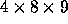 (length, width, and height). In 6 dimensions it is, perhaps, unclear what the box (4,5,6,7,8,9) represents; but we can analyze properties of the box such as the sum of its dimensions.
In this problem you will analyze a property of a group of n-dimensional boxes. You are to determine the longest nesting string of boxes, that is a sequence of boxes 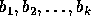 such that each box nests in box 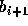 ( 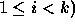 .
A box D = ( 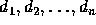 ) nests in a box E = ( 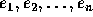 ) if there is some rearrangement of the 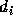 such that when rearranged each dimension is less than the corresponding dimension in box E. This loosely corresponds to turning box D to see if it will fit in box E. However, since any rearrangement suffices, box D can be contorted, not just turned (see examples below).
For example, the box D = (2,6) nests in the box E = (7,3) since D can be rearranged as (6,2) so that each dimension is less than the corresponding dimension in E. The box D = (9,5,7,3) does NOT nest in the box E = (2,10,6,8) since no rearrangement of D results in a box that satisfies the nesting property, but F = (9,5,7,1) does nest in box E since F can be rearranged as (1,9,5,7) which nests in E.
Formally, we define nesting as follows:
box D = ( ) nests in box E = ( ) if there is a permutation  of
of  such that
( 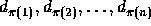 ) ``fits'' in ( ) i.e., if 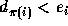 for all
such that
( 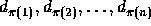 ) ``fits'' in ( ) i.e., if 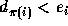 for all  .
.
The input consists of a series of box sequences. Each box sequence begins with a line consisting of the the number of boxes k in the sequence followed by the dimensionality of the boxes, n (on the same line.)
This line is followed by k lines, one line per box with the n measurements of each box on one line separated by one or more spaces. The 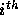 line in the sequence ( 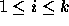 ) gives the measurements for the box.
There may be several box sequences in the input file. Your program should process all of them and determine, for each sequence, which of the k boxes determine the longest nesting string and the length of that nesting string (the number of boxes in the string).
In this problem the maximum dimensionality is 10 and the minimum dimensionality is 1. The maximum number of boxes in a sequence is 30.
For each box sequence in the input file, output the length of the longest nesting string on one line followed on the next line by a list of the boxes that comprise this string in order. The ``smallest'' or ``innermost'' box of the nesting string should be listed first, the next box (if there is one) should be listed second, etc.
The boxes should be numbered according to the order in which they appeared in the input file (first box is box 1, etc.).
If there is more than one longest nesting string then any one of them can be output.
5 2 3 7 8 10 5 2 9 11 21 18 8 6 5 2 20 1 30 10 23 15 7 9 11 3 40 50 34 24 14 4 9 10 11 12 13 14 31 4 18 8 27 17 44 32 13 19 41 19 1 2 3 4 5 6 80 37 47 18 21 9
5 3 1 2 4 5 4 7 2 5 6